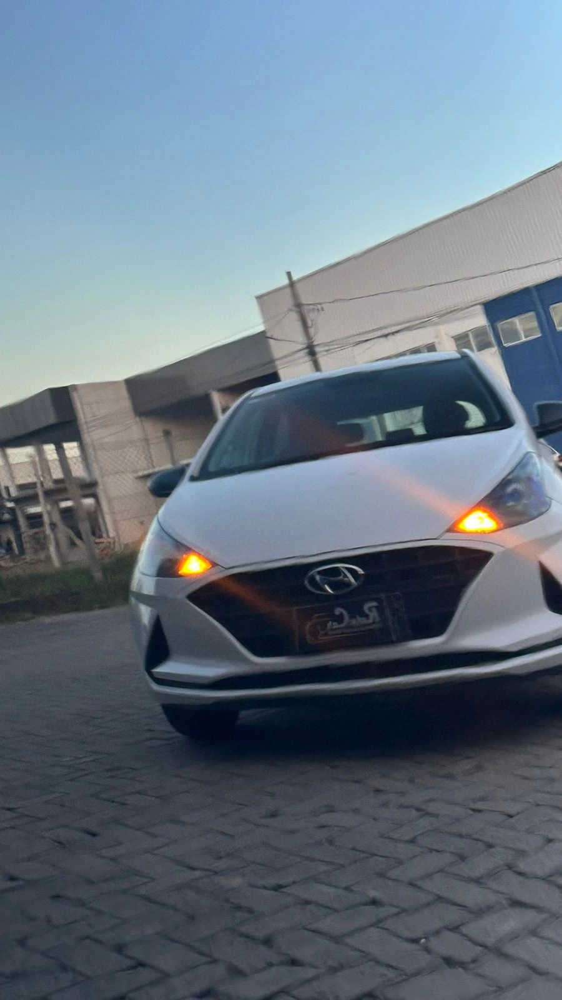
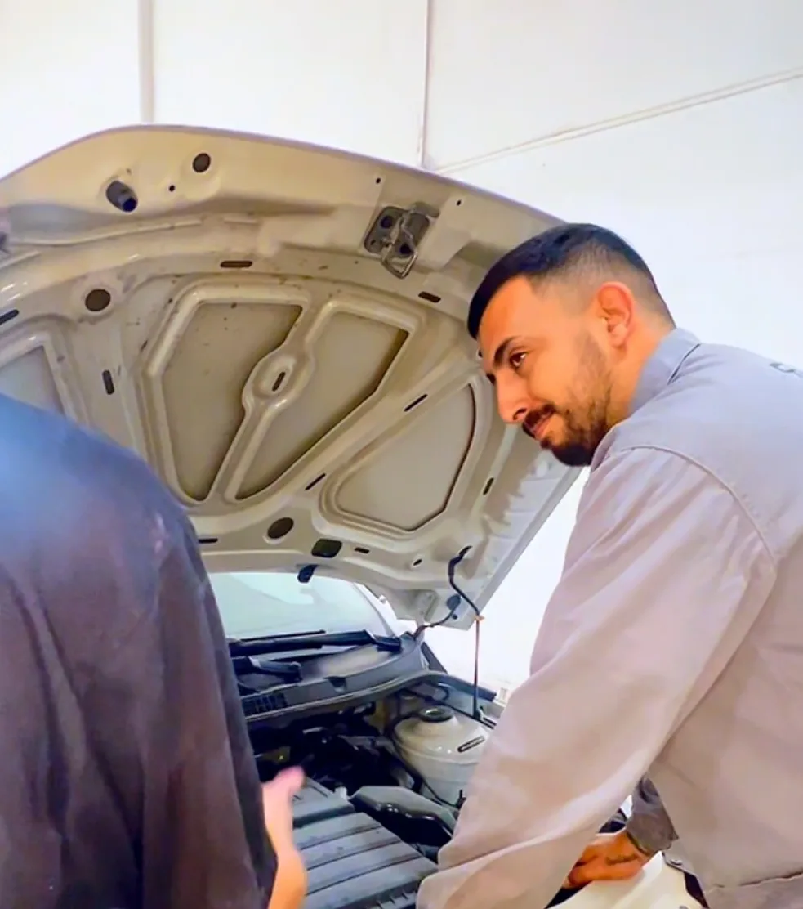
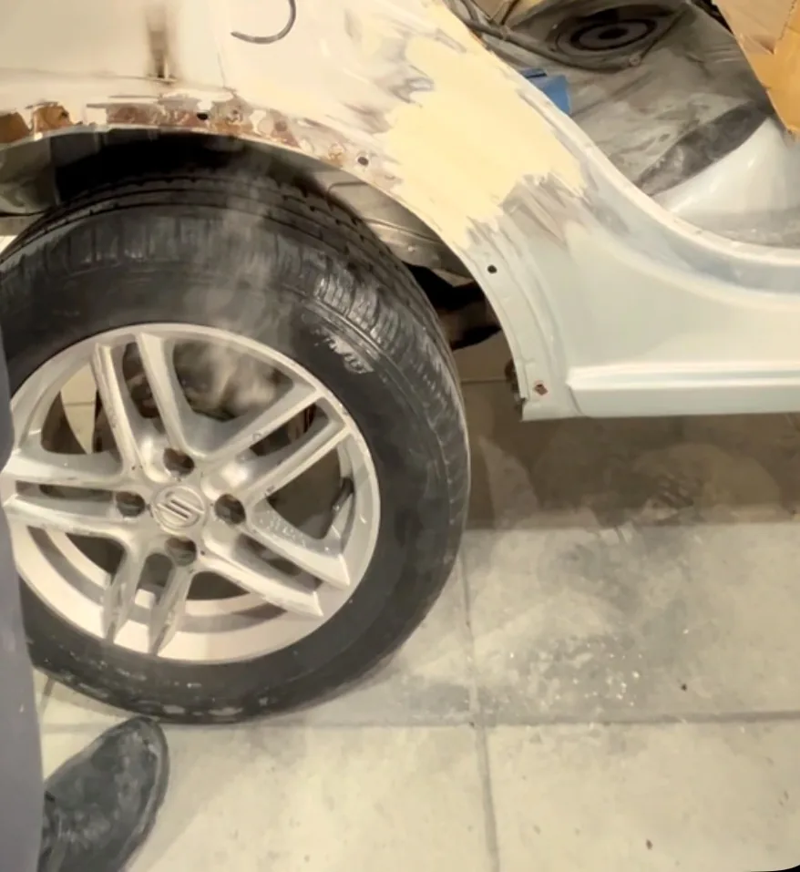
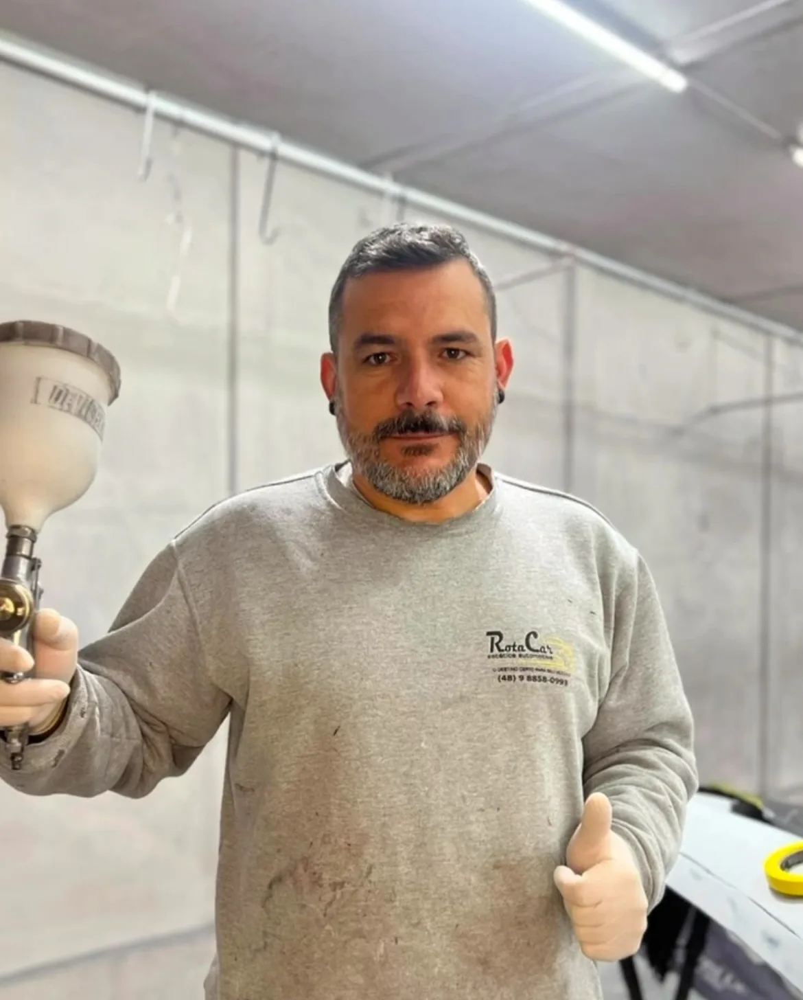
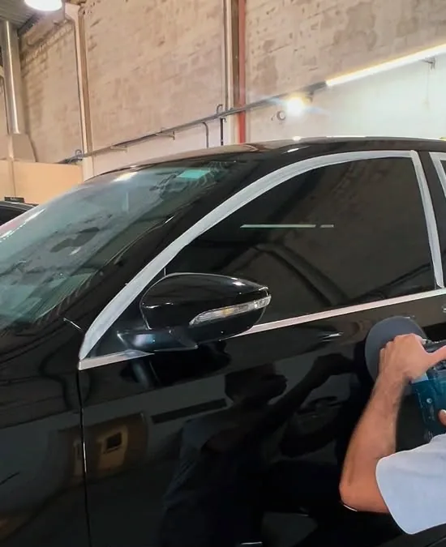
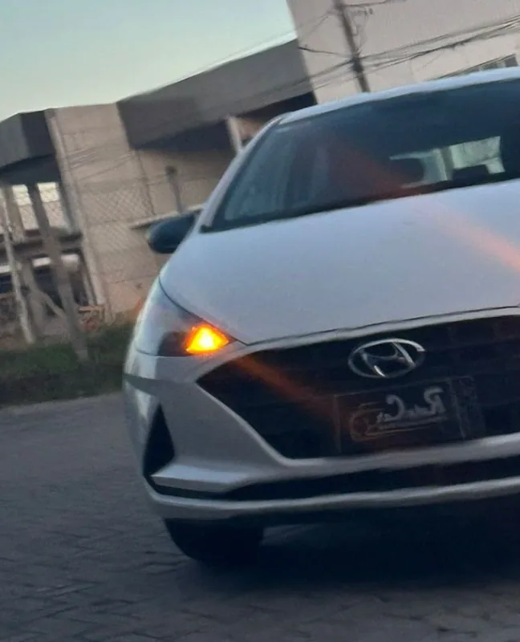
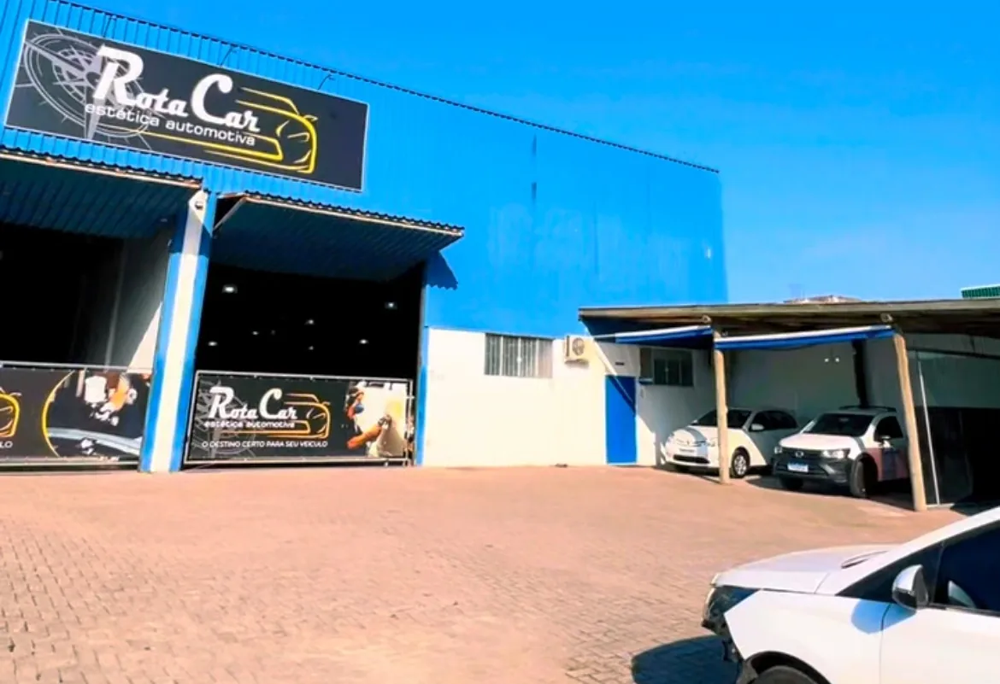

Estética automotiva · Tubarão/SC
Seu carro entra na rota. Sai brilhando.
Mecânica, funilaria, martelinho de ouro, pintura, polimento e cristalização num só endereço, no Revoredo.
Rua Paulo Jacob May, 419 · Revoredo
A rota do seu carro
Cinco paradas dentro da oficina.
-

01Mecânica
Começa por baixo do capô.
A rota abre com o que faz o carro andar: diagnóstico, manutenção e reparos mecânicos.
-

02Funilaria & Martelinho de Ouro
A lataria volta ao lugar.
Na funilaria, a peça avariada é recuperada e preparada. Quando o amassado não danificou a pintura, o martelinho de ouro pode desamassar sem repintar.
-

03Pintura
A cor volta para a peça.
Peças reparadas ou riscadas recebem nova pintura, com atenção ao tom e ao acabamento do restante do carro.
-

04Polimento
O brilho aparece.
O polimento trabalha a superfície da pintura para devolver brilho e suavizar marcas finas e riscos superficiais.
-

05Cristalização
E sai pronto para a rua.
A cristalização cria uma camada sobre a pintura que ajuda a proteger e realça o brilho. Pergunte qual cuidado combina com o seu carro.
Serviços
Escolha o serviço e peça o orçamento.
Cada linha abre o WhatsApp da oficina com o serviço já escrito na mensagem.
- FunilariaRecuperação de lataria amassada, riscada ou avariada.(abre o WhatsApp)
- MecânicaDiagnóstico, manutenção e reparos mecânicos.(abre o WhatsApp)
- PinturaPintura de peças reparadas, riscadas ou desgastadas.(abre o WhatsApp)
- PolimentoBrilho de volta à pintura, suavizando riscos superficiais.(abre o WhatsApp)
- CristalizaçãoCamada de proteção que realça o brilho da pintura.(abre o WhatsApp)
- Martelinho de OuroPequenos amassados sem repintura, quando a pintura está intacta.(abre o WhatsApp)
Onde estamos
O fim da rota é aqui no Revoredo.
Rua Paulo Jacob May, 419Revoredo · Tubarão – SC
No Instagram, os destaques mostram serviços, polimento, cristalização, martelinho de ouro e dicas.

Conte o que o seu carro precisa.
Mande uma mensagem com o modelo do carro e o serviço. Se puder, envie fotos do que precisa de reparo.
Pedir orçamento no WhatsApp